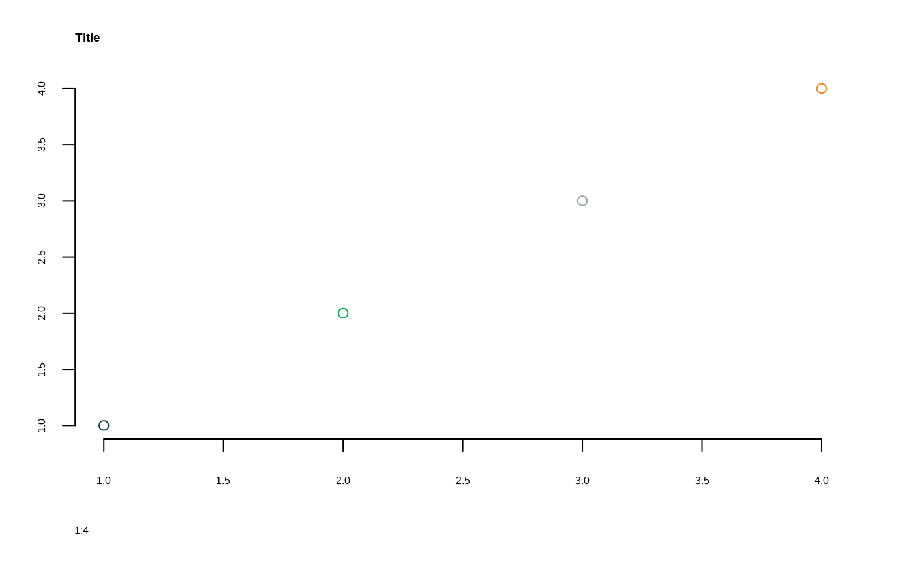

Set MSUthemes base R graphical parameters
Usage
set_msu_par(
family = "Metropolis",
adj = 0,
mar = c(5, 3, 3, 2.5),
bty = "n",
...
)
Arguments
- family
Font used for all text elements. Default "Metropolis".
- adj
Alignment of text for title. Default 0.
- mar
Margins. Default c(5, 3, 3, 2.5).
- bty
Axis lines. Default "n".
- ...
Additional arguments passed to par
Value
Returns an invisible named list.
Examples
# save user's current par values that this function will change
oldpar <- par("family", "adj", "mar", "bty")
set_msu_par()
plot(1:4, 1:4, col=1:4, main = "Title")

par(oldpar)